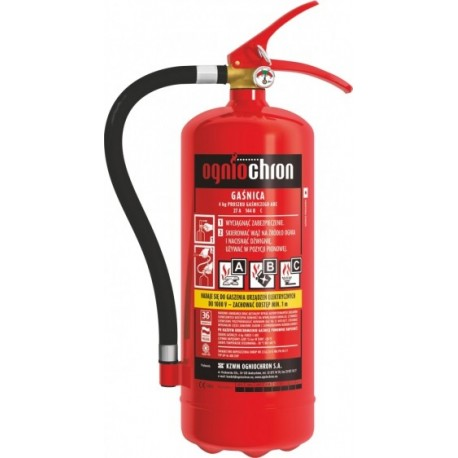
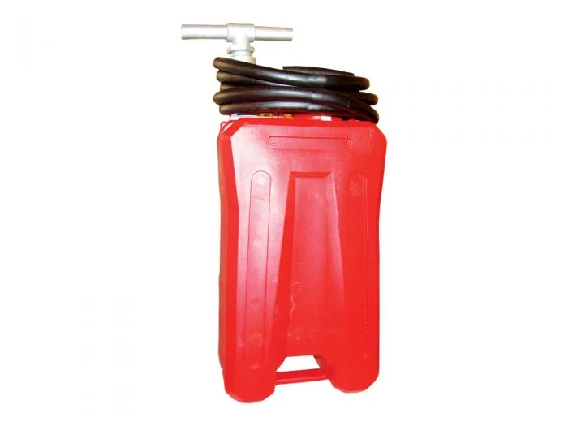

Видове Пожарогасители
Вътрешен противопожарен кран
Монтира се в специална ниша на всеки етаж и се
свързва със специално изграден водопровод.
Състои се от шланг с дължина 20 м., струйник,
спирателен кран.

Пожарогасители
на водна основа
Водният пожарогасител 9 лтр. е широко разпространен
пожарогасител, често предписван от органите по пожарна
безопасност.

Пожарогасители
С Въглероден Диоксид
Предназначен е за гасене на начални пожари, възникнали
в двигатели с вътрешно горене, електрически машини,
включително поднапрежение, леснозапалими течности, ценни
предмети и книжа.
При работа с пожарогасителя се спазва следната последователност:
- Вентилът се отваря с едната ръка
- Снегообразувателят се насочва в зоната на пожара

Кофпомпа
Кофпомпата работят двама или трима души. Единият
помпа, вторият насочва струята към пожара,а при
необходимост третият я зарежда с вода.
